2D ocean-bottom marine acquisition via jittered sampling: examples and results
Author: Haneet Wason (hwason@eos.ubc.ca)
Date: April, 2013
Contents
Time-jittered acquisition with 1 boat
See the scripts under examples/TimeJitAcq_1boat/.
Load the parameters file
load([resultsdir '/TimeJitAcq_1boat/TimeJitAcq_1boat_params.mat'])
Conventional vs. time-jittered acquisition scenario
flipflop = 'no'; fig = 'yes'; convacq_2arrays(flipflop, tfireint_min, ns, dt, boatspeed, fig); jitter_airgunarrays(ns, ds, dt, p, nboats, randseed, boatspeed, tfireint_min, tdelay, delayboat, fig);
Boat 1 - airgun array 1 Minimum interval between jittered firing times: 10.228 s Maximum interval between jittered firing times: 29.7719 s First jittered shot number: 1 Last jittered shot number: 126 Boat 1 - airgun array 2 Minimum interval between jittered firing times: 10.4796 s Maximum interval between jittered firing times: 29.5199 s First jittered shot number: 2 Last jittered shot number: 124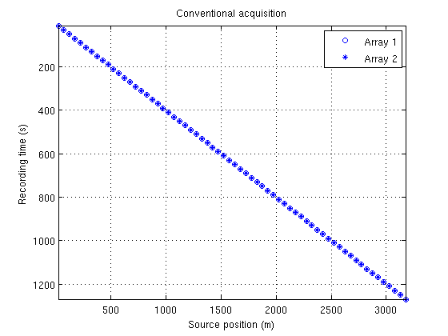 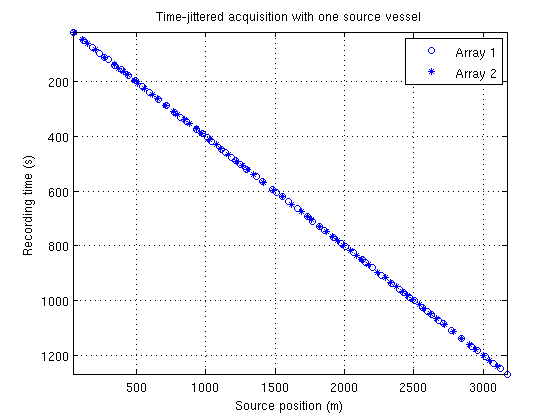
Original data
frame.t = 300; frame.r = 60; frame.s = 92; caxmin = 100; caxmax = 100; cmap = 'gray'; image2DTRSframe([resultsdir '/TimeJitAcq_1boat/Suez_ds25m.rsf'], frame, nt, dt, caxmin, caxmax, cmap);

Time-jittered (or blended) data volume: view 30 seconds of the jittered data volume
t1 = 130.0;
t2 = 160.0;
imageJitteredData([resultsdir '/TimeJitAcq_1boat/TimeJitAcq_1boat_jitdata.rsf'], t1, t2, dt, nr, dr, caxmin, caxmax, cmap);
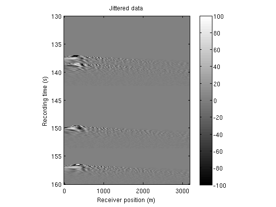 Recovery by conventional processing: apply the adjoint of the sampling operator
image2DTRSframe([resultsdir '/TimeJitAcq_1boat/TimeJitAcq_1boat_adjrecov.rsf'], frame, nt, dt, caxmin, caxmax, cmap);

NOTE: an empty shot gather image implies that none of the airguns fired at that location.
This step is usually followed by some kind of median filtering on common receiver or CMP gathers. We address the challenge of deblending by a (curvelet-based) sparsity-promoting recovery technique.
Recovery by sparse inversion (via L1 minimization)
image2DTRSframe([resultsdir '/TimeJitAcq_1boat/TimeJitAcq_1boat_L1recov.rsf'], frame, nt, dt, caxmin, caxmax, cmap);
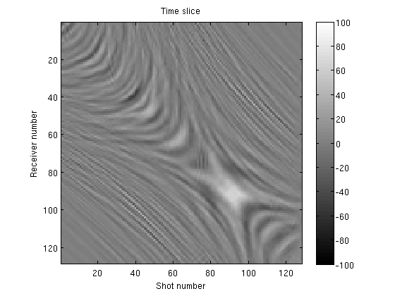 Difference
image2DTRSframe([resultsdir '/TimeJitAcq_1boat/TimeJitAcq_1boat_L1diff.rsf'], frame, nt, dt, caxmin, caxmax, cmap);
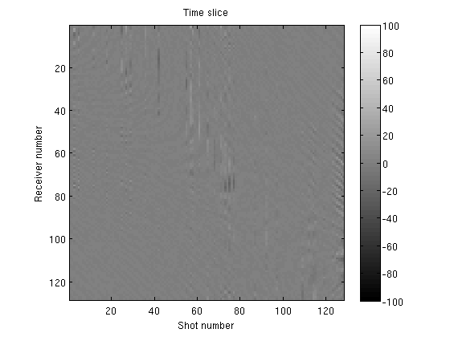 Time-jittered acquisition with 2 boats
See the scripts under examples/TimeJitAcq_2boats/.
Load the parameters file
load([resultsdir '/TimeJitAcq_2boats/TimeJitAcq_2boats_params.mat'])
Time-jittered acquisition scenario
fig = 'yes';
jitter_airgunarrays(ns, ds, dt, p, nboats, randseed, boatspeed, tfireint_min, tdelay, delayboat, fig);
Boat 1 - airgun array 1 Minimum interval between jittered firing times: 10.228 s Maximum interval between jittered firing times: 29.695 s First jittered shot number: 3 Last jittered shot number: 124 Boat 1 - airgun array 2 Minimum interval between jittered firing times: 10.4861 s Maximum interval between jittered firing times: 29.2786 s First jittered shot number: 2 Last jittered shot number: 119 Boat 2 - airgun array 1 Minimum interval between jittered firing times: 10.4796 s Maximum interval between jittered firing times: 29.5199 s First jittered shot number: 2 Last jittered shot number: 122 Boat 2 - airgun array 2 Minimum interval between jittered firing times: 10.498 s Maximum interval between jittered firing times: 29.5598 s First jittered shot number: 2 Last jittered shot number: 128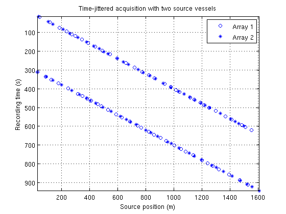
Original data
frame.t = 300;
frame.r = 70;
frame.s = 30;
image2DTRSframe([resultsdir '/TimeJitAcq_2boats/Suez_ds12pt5m.rsf'], frame, nt, dt, caxmin, caxmax, cmap);
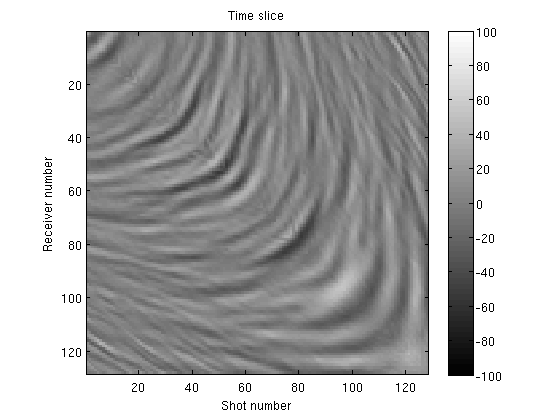 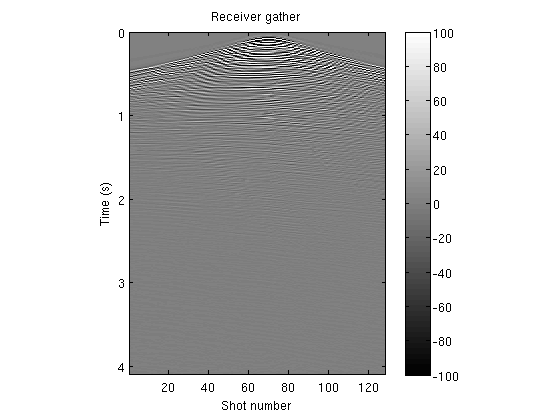 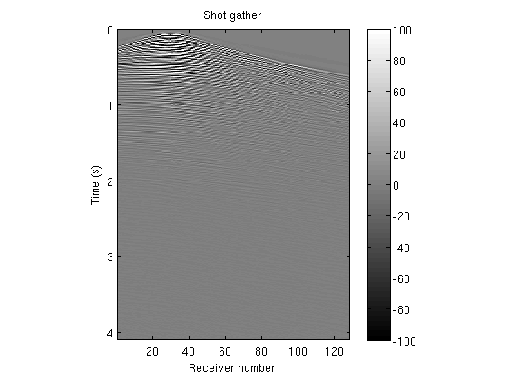 Time-jittered (or blended) data volume: view 30 seconds of the jittered data volume
t1 = 330.0;
t2 = 360.0;
imageJitteredData([resultsdir '/TimeJitAcq_2boats/TimeJitAcq_2boats_jitdata.rsf'], t1, t2, dt, nr, dr, caxmin, caxmax, cmap);
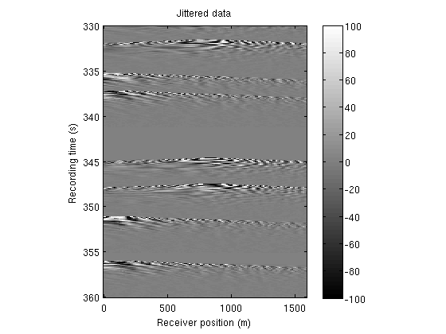 Recovery by conventional processing: apply the adjoint of the sampling operator
image2DTRSframe([resultsdir '/TimeJitAcq_2boats/TimeJitAcq_2boats_adjrecov.rsf'], frame, nt, dt, caxmin, caxmax, cmap);
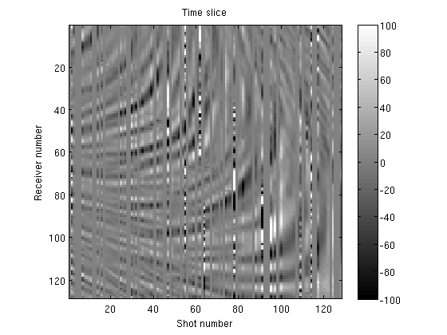 This step is usually followed by some kind of median filtering on common receiver or CMP gathers. We address the challenge of deblending by a (curvelet-based) sparsity-promoting recovery technique.
Recovery by sparse inversion (via L1 minimization)
image2DTRSframe([resultsdir '/TimeJitAcq_2boats/TimeJitAcq_2boats_L1recov.rsf'], frame, nt, dt, caxmin, caxmax, cmap);
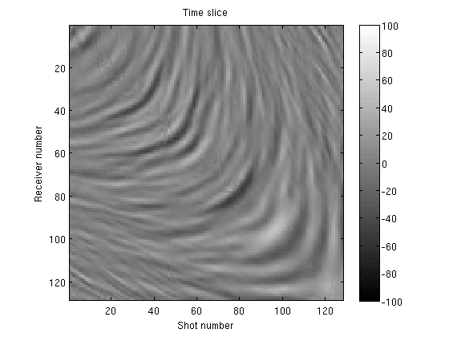 Difference
image2DTRSframe([resultsdir '/TimeJitAcq_2boats/TimeJitAcq_2boats_L1diff.rsf'], frame, nt, dt, caxmin, caxmax, cmap);

Running the code on your own data
Template scripts are included that can be adapted to run the code on your own data. See the scripts directory.